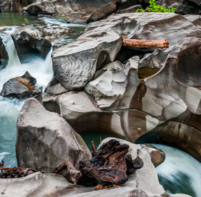
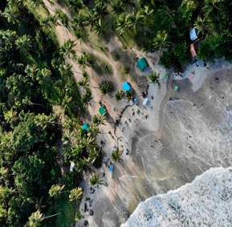

Viagens
A Descubra Turismo tem ótimas opções de viagens nacionais e internacionais, com um foco maior em destinos de ecoturismo, organizamos a sua viagem para que a aventura se torne segura e confortável. Os destinos de praias mais procurados são, Fernando de Noronha, Morro de São Paulo, Itacaré e Jericoacoara.Já as viagens com foco em caminhadas, os mais procurados são, Jalapão e as Chapadas. Além dos destinos clássicos como Amazônia e Bonito. O Brasil tem uma infinidade de opções e a Descubra Turismo irá lhe ajudar nessa próxima viagem, confira nossas opções.
Nosso País
Brasil

Região Centro-Oeste
Goiás • Mato Grosso do Sul

Região Nordeste
Bahia • Maranhão • Pernambuco • Piaui
Região Norte
Amazonas • Tocantis
Região Sudeste
Minas Gerais